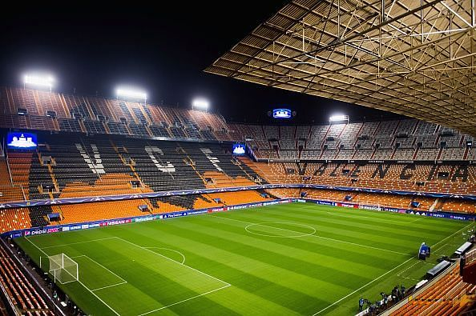
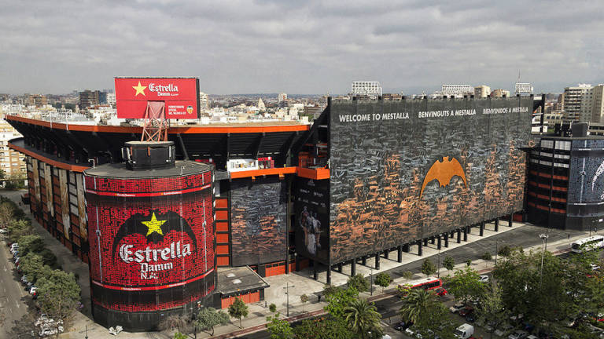
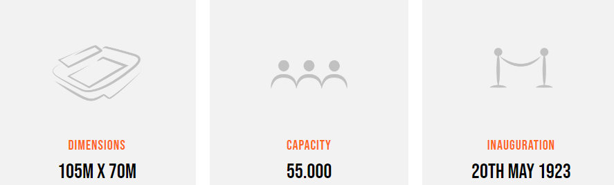
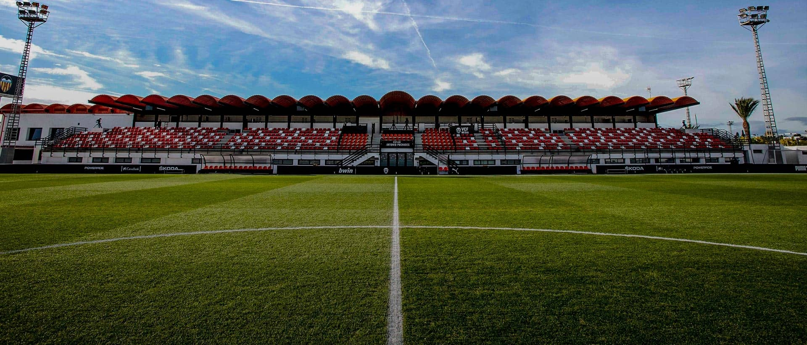
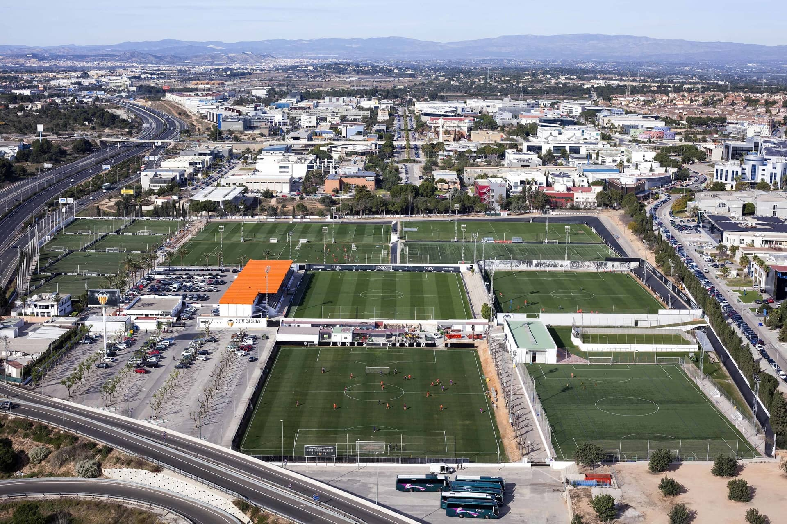

FACILITIES
MESTALLA
The prestigious British newspaper 'The Telegraph' published a special report in their sports section about the 20 greatest grounds in European football when FC Barcelona announced their intention to revamp their ground for the 2020/21 campaign. Mestalla was ranked second. ‘The Telegraph’ describes the stadium by saying: ”The steepest stands of any major ground in Europe still take your breath away, even if you have seen them a thousand times”. Mestalla was ranked above other Spanish grounds such as the Camp Nou, Santiago Bernabéu and Vicente Calderón, as well as other legendary grounds like the Parc des Princes, Anfield, Allianz Arena, Old Trafford, and the Giuseppe Meazza.
 Mestalla info
Training
The current, remodelled Ciudad Deportiva was opened on February 19th, 1992. As time went by, the land came to be used as the first team training pitch and the football school. The Ciudad Deportiva covers 180,000m2. Besides the design to hold its school for future players and halls of residence, it also features a modern rehabilitation centre with various rooms, for players to recover from injuries.
Valencia CF's sports facilities continue to grow, providing the best conditions for the hundreds of athletes who use them everyday. The most recent additions have come in the firm of training ramps and a 'footvolley' court. The Ciudad Deportiva is considered to be amongst the best in Europe, at the same level as other legendary football facilities.
 